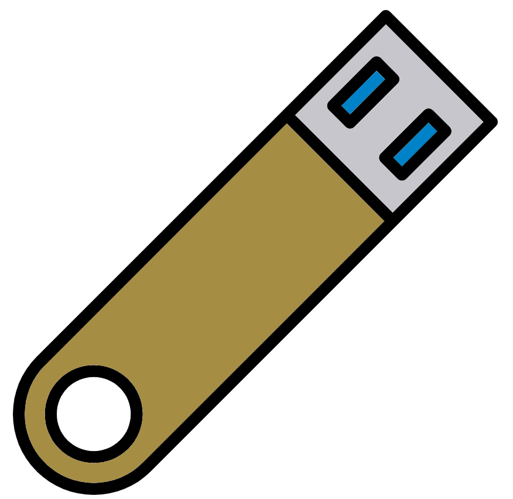
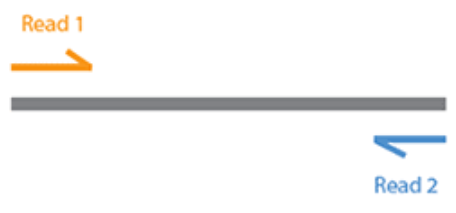

mkdir 1-Raw
cd 1-RawRaw data

The very first thing we need to do is to obtain a dataset to work with. The European Bioinformatics Institute (EBI) provides an excellent metagenomics resource (https://www.ebi.ac.uk/metagenomics/) which allows users to download publicly available metagenomic and metagenetic datasets.
Have a browse of some of the projects by selecting one of the biomes on the website.
We have selected a dataset from this site that consists of DNA shotgun data generated from 24 human faecal samples. 12 of these samples are from subjects who were fed a Western diet and 12 are from subjects who were fed a Korean diet. This dataset comes from the EBI metagenomics resource (https://www.ebi.ac.uk/metagenomics/projects/ERP005558).
Obtaining the data
First, we need to create a directory to put the data in and then change directory to it.
Now we can generate a symbolic links (i.e. shortcut) to the raw sequence data files, which will appear in the current directory:
ln -s /pub14/tea/nsc206/NEOF/Shotgun_metagenomics/raw_fastq/* .If you would like to know more about the ln command please check out: https://linuxize.com/post/how-to-create-symbolic-links-in-linux-using-the-ln-command/.
Check the symbolic links are in your current directory:
lsThere should be six files in the directory, two for each sample in the dataset. e.g. K1_R1.fastq.gz
The file ID has three components:
- K1 is the sample ID.
- R1 is for the forward reads in the Illumina reads pair (R2 is for the set corresponding to the other end of the reads).
- fastq.gz tells us that this is a gzipped FASTQ file.
The three samples are:
- K1: Fecal sample of individual of Korean diets
- K2: Fecal sample of individual of Korean diets
- W1: Fecal sample of individual of Western diets
So, what do the R1 and R2 actually mean? With Illumina sequencing the vast majority of sequencing is paired end. i.e. DNA is first fragmented and both ends of each fragment are sequenced as shown here:

This results in two sequences generated for each sequenced fragment: One reading in from the 3’ end (R1) and the other reading in from the 5’ end (R2).
FASTQ is a sequence format much like FASTA, with the addition of quality scores. To see what a FASTQ file looks like, we can inspect the first few lines on one of our sequence files:
zcat K1_R1.fastq.gz | head -n 4 | less -SThe pipe symbol ( | ) is used to pass the output of one command as input to the next command. So, this command:
- Shows the unzipped contents of the FASTQ file
- Displays only the first 4 lines
- Displays them without wrapping lines (with
–S, for easy viewing)
The lines displayed represent one FASTQ sequence entry, or one read of a read pair: The corresponding second read can be viewed by running the same command on K1_R2.fastq.gz. The first line is the read identifier, the second line is the sequence itself, the third line is a secondary header (which is usually left blank except for ‘+’) and the fourth line is the sequence quality score: For each base in the sequence, there is a corresponding quality encoded in this string of characters.
To return to the command prompt, press q.
Due to computational constraints, the files you have linked to are a subset of the original data (i.e. 1 million read pairs from each sample).
Checking quality control
We can generate and visualise various sequence data metrics for quality control purposes using FastQC. We will run FastQC on the R1 and R2 reads separately as it is good to visualise them in two different reports. This is because R1 and R2 reads have different quality patterns, generally due to the poorer quality of R2.
Run FastQC on the files:
#R1 fastqc
#Make an output directory
mkdir R1_fastqc
#Run fastqc on all the R1.fastq.gz files
#* matches any pattern
#*R1.fastq.gz matches any file that ends R1.fastq.gz in the current directory
#-t 3 indicates to use 3 threads, chosen as there are three R1 files
fastqc -t 3 -o R1_fastqc *R1.fastq.gz
#R2 fastqc
#Make output directory
mkdir R2_fastqc
#Run fastqc
fastqc -t 3 -o R2_fastqc *R2.fastq.gzOnce the FastQC commands are run we can run MultiQC to create interactive html reports for the outputs.
#R1 multiqc fastqc report
#Create output directory
mkdir R1_fastqc/multiqc
#Create multiqc output
multiqc -o R1_fastqc/multiqc R1_fastqc
#R2 multiqc fastqc report
#Create output directory
mkdir R2_fastqc/multiqc
#Create multiqc report
multiqc -o R2_fastqc/multiqc R2_fastqcOnce completed, view the MultiQC reports (NB: The & runs the command in the background, therefore allowing you to continue to run commands while Firefox is still open).
This is a longer command so we’ve split it across multiple lines with bash escape. A \ at the end of a line allows you to press return/enter without running the command, meaning you can continue to add to that command. When this happens, the $ changes to a >. For more information please see our Intro to Unix materials
Note if you do use the \ character, the next key you press must be return/enter. If you use \ in the middle of a line without pressing return afterwards, it will break the command!
firefox R1_fastqc/multiqc/multiqc_report.html \
R2_fastqc/multiqc/multiqc_report.html &The FastQC report (via MultiQC) contains a number of metrics. The “Sequence Quality Histograms” shows the sequence quality across the length of the reads, you can hover over each line to show which sample it belongs to. Note how quality decreases as the length of the read increases. While this is normal with Illumina sequencing, we will improve the situation a bit in the next chapter.
For more information on the plots of FactQC please see this online resource.
Once you have finished inspecting, minimise the Firefox window.